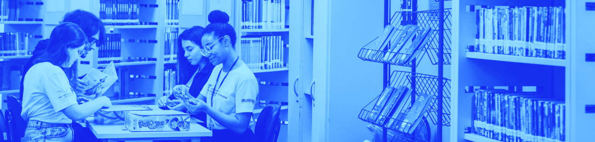

Biblioteca de recursos

Maria de Fátima goulão | Universidade Aberta - Portugal | 2023
#Elearning
#E-atividades
#Pedagogia do online
#Ferramentas digitais
#Estilos de aprendizagem
#Estruturação da atividade didática
#Modelo pedagógico
Alexandre Martins dos Anjos;
Glaucia Eunice Gonçalves da Silva
Secretaria de Tecnologia Educacional - UFMT | 2018
#Sociedade da Informação, cultura digital e TICs na educação
#TDIC e a organização do trabalho pedagógico escolar
Daniel Bramo Nascimento de Carvalho; Ronaldo Nunes Linhares Revista Teias | 2023
#Pedagogia dos multiletramentos
#Novas práticas no espaço escolar que se relacionem com as nossas competências em ler o mundo a partir das mídias
Gizele de Souza; Catarina Moro Educar em Revista - Curitiba | 2020
#Comunicação e Hierarquia Social
#A virtualização do Ensino Superior
#Políticas públicas
#Educação Híbrida
#Inovações pedagógicas contemporâneas para uma educação emancipadora
#Formação de professores na cultura digital gamificação
#Integração de tecnologias digitais ao currículo #Narrativas dos professores nas redes #Ciberfeminismo
#Multiletramentos críticos na cibercultura
#Arquiteturas digitais de aprendizagem
Sara Ferreira Alves Castro
Centro de Educação e Ciências Humanas - UFSCAr | 2023
#Esta pesquisa analisou possíveis implicações da cultura digital e do ensino na pandemia sobre a prática pedagógica dos professores da Educação Profissional e Tecnológica
Saberes em MovimentoMaria Carolina Machado Magnus; Inara Fonseca;
Elizandro Maurício Brick
UFSC - Florianópolis | 2019
#O livro nos instiga a repensar a importância de se colocar em debate o papel da Universidade, principalmente no que se refere a formação de professoras e professores, no desempenho em dar visibilidade a outros saberes que não somente aqueles denominados científicos/acadêmicos.
Lúcia Santaella
Revista FAMECOS - Porto Alegre | 2003
#Este artigo trata da questão do desenvolvimento das tecnologias da informação e da comunicação e sua implicação em todas as esferas da sociedade.
Demerval Saviani
Revista Brasileira de Educação | 2007
#Relação trabalho-educação ,
#Fundamentos histórico-filosóficos da educação #Educação politécnica
Isabel Cristina Alves da Silva Frade Glossário Ceale: termos de alfabetização, leitura e escrita para educadores - Belo Horizonte: UFMG/Faculdade de Educação | 2014
#Pedagogia dos multiletramentos
#Novas práticas no espaço escolar que se relacionem com as nossas competências em ler o mundo a partir das mídias
Magda Soares
Educação e Sociedade | 2002
#Letramento
#Cultura do papel
#Cibercultura
#Práticas de leitura #Práticas de escrita
Maria Helena Silveira Bonilla; Nelson De Luca Pretto
UFBA, Salvador | 2011
#Inclusão digital
#Internet na educação
#Tecnologia da informação
#Inclusão social
#Políticas públicas
UFBA, Salvador | 2011
#Inclusão digital
#Internet na educação
#Tecnologia da informação
#Inclusão social
#Políticas públicas
Marcelo Cabeda
Revista Brasileira de Aprendizagem Aberta e a Distância | 2004
Revista Brasileira de Aprendizagem Aberta e a Distância | 2004
#O objetivo deste artigo é estimular o interesse do leitor em avaliar as possibilidades da Educação a Distância, EAD, em seu formato de didática on-line, EOL colaborativa, como um método possível de auxílio à produção de conhecimentos, com a finalidade de desenvolver a cidadania.
Charles Hodges; Stephanie Moore; Barb Lockee ;Torrey Trust; Aaron Bond
Educase Review| 2020
#Well-planned online learning experiences are meaningfully different from courses offered online in response to a crisis or disaster. Colleges and universities working to maintain instruction during the COVID-19 pandemic should understand those differences when evaluating this emergency remote teaching.
Braian Veloso; Daniel Mill; Revista Portuguesa de Educação | 2024 #Educação a distância
#Ensino remoto
#Pandemia
#Ensino remoto
#Pandemia
Maria Ciavatta;
Marise Ramos
Revista Retratos da Escola, Brasília | 2011
Marise Ramos
Revista Retratos da Escola, Brasília | 2011
#Dualidade e fragmentação no ensino médio e na educação profissional devem ser compreendidas não apenas na sua expressão atual, mas também nas suas raízes sociais – a estrutura secular da sociedade de classes ede implantação do capitalismo.
Elementos para uma reflexão sobre a inteligência artificial na EPT
Raquel Folmer Côrrea; Vicente Ciotta lima;
Seminário da Rede Gaúcha de Estudos e Pesquisa Sobre Educação Profissional e Tecnológica | 2023
Nesse texto os autores discutem a importância da Inteligência Artificial na Educação Profissional e Tecnológica (EPT), destacando seu impacto nas práticas pedagógicas e a necessidade de reflexões críticas sobre sua adoção. O artigo convida a uma análise cuidadosa dos desafios e oportunidades que a IA traz para a formação de profissionais no contexto da EPT.
Maria Adélia Costa; Giuliano Richard Ribeiro; Eduardo André Mossini;
Revista Conexões | 2023
O texto explora como a Inteligência Artificial pode contribuir para a prática docente na Educação Profissional, destacando seu potencial para melhorar o ensino e a aprendizagem. O artigo aborda as possibilidades e desafios da integração da IA nas práticas pedagógicas, enfatizando sua relevância no contexto educacional atual.
Revista Conexões | 2023
O texto explora como a Inteligência Artificial pode contribuir para a prática docente na Educação Profissional, destacando seu potencial para melhorar o ensino e a aprendizagem. O artigo aborda as possibilidades e desafios da integração da IA nas práticas pedagógicas, enfatizando sua relevância no contexto educacional atual.
Samuel de Oliveira Durso
Revista Retratos da Escola, Brasília | 2011
Revista Retratos da Escola, Brasília | 2011
#Dualidade e fragmentação no ensino médio e na educação profissional devem ser compreendidas não apenas na sua expressão atual, mas também nas suas raízes sociais – a estrutura secular da sociedade de classes ede implantação do capitalismo.

Analisando as potencialidades da inteligência artificial na criação de materiais didáticos para o ensino de física
Manoel Salvino de Lima Neto | Revista do Professor de Física | 2024
Neste texto o autor analisa as potencialidades da Inteligência Artificial na criação de materiais didáticos para o ensino de Física. O artigo destaca como a IA pode facilitar o desenvolvimento de recursos pedagógicos personalizados e interativos, melhorando a experiência de ensino e aprendizagem nessa área.
Os impactos da inteligência artificial na sala de aula
Rafael Durant Pacheco, Marcos Aurélio Teixeira Ribeiro, Ana Paula da Silva, Liliana Marques Andrade Furlan, Victor Brandão Ataliba, Jaqueline Costa Sherrer, Lauzidete de Oliveira Leite, Patrícia Dias da Costa Marinho, Valéria Aparecida Pereira da Silva, Luziane de Lucca Garcia Brandão.
Revista Foco | 2024
Os autores examinam os impactos da Inteligência Artificial na educação, destacando como ela modifica práticas pedagógicas, personaliza o aprendizado e apresenta desafios para o ensino. O artigo discute os efeitos positivos e negativos da adoção da IA em sala de aula.
Produção acadêmico-científica sobre inteligência artificial no campo da educaçãoEric Ferdinando Kanai Passone, Paula Vilela Miekusz de Vasconcelos.
ETD – Educação Temática Digital | 2024
Os autores analisam a produção acadêmico-científica sobre Inteligência Artificial no campo da educação. O artigo explora tendências, desafios e o impacto da IA no desenvolvimento de práticas educativas, destacando seu papel crescente no ambiente acadêmico.
Pensar a inteligência artificial
Lúcia Santaella
PPGCOM/UFMG | 2023
Neste texto Santaella reflete sobre a Inteligência Artificial no contexto da cultura de plataformas digitais, analisando os desafios que ela impõe à criatividade humana. A obra discute como a IA transforma a produção cultural e as dinâmicas sociais, destacando as implicações tecnológicas para a criatividade e inovação.
Reflexões sobre inteligência artificial e os sentidos da prática educativa na contemporaneidade
Marcia Amaral Corrêa Ughini Villaroel
Revista de Ciências Humanas | 2023
Os autores examinam os impactos da Inteligência Artificial na educação, destacando como ela modifica práticas pedagógicas, personaliza o aprendizado e apresenta desafios para o ensino. O artigo discute os efeitos positivos e negativos da adoção da IA em sala de aula.
I Simpósio de Inteligência Artificial Aplicada na Educação - Abertura e palestrasFaculdade de Educação da Unicamp | 2023
Os autores analisam a produção acadêmico-científica sobre Inteligência Artificial no campo da educação. O artigo explora tendências, desafios e o impacto da IA no desenvolvimento de práticas educativas, destacando seu papel crescente no ambiente acadêmico.
Marc Prensky | On the Horizon | 2001
#Part one of this paper highlights how students today think and process information fundamentally differently from their predecessors, as a result of being surrounded by new technology. The author compares these “digital natives” with the older generation who are learning and adopting new technology naming them “digital immigrants”.